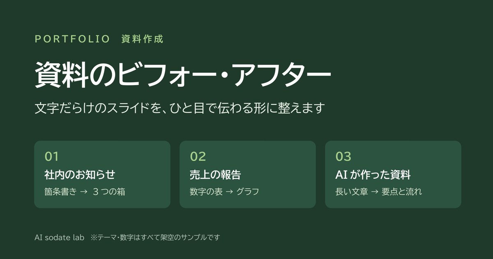
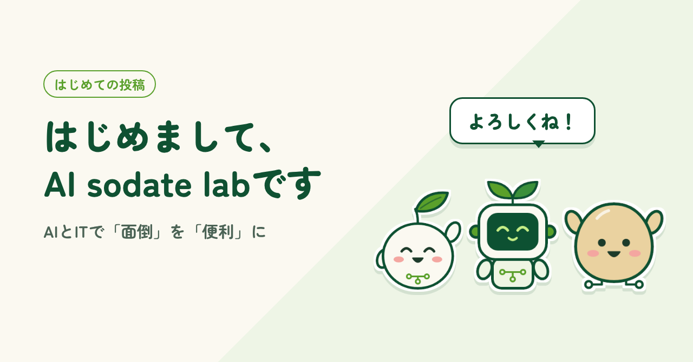

WORKS
作ったもの、作っている途中のもの、書いた記事を一覧にまとめています。タグで絞り込めます。気になる作品を押すと、制作した理由や工夫した点を読めます。

見本 全7枚
文字だらけのスライドを、ひと目で伝わる形に整えます

記事 約900字
研究所が大事にしていること、サイトの中身、これからの使い分け
作品は準備中です。順次追加していきます。
掲載している作品をベースにしたカスタマイズや、新しいツールの制作もご相談ください。